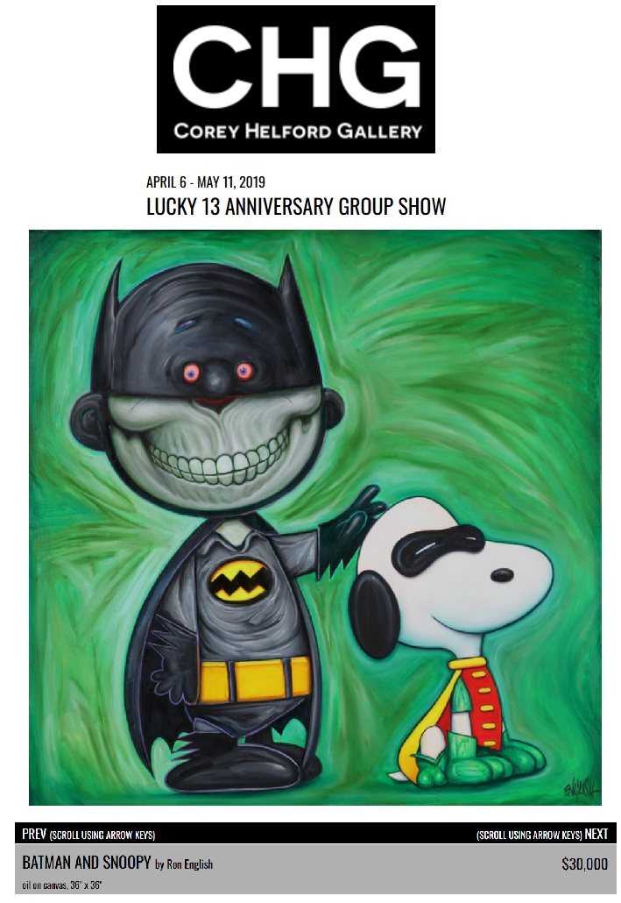

Exhibitions
Lucky 13 Anniversary Show, Pt. 1: Fine Art of Street & Graffiti, Corey Helford Gallery, Los Angeles, California, US, April 6–May 11, 2019.
Notes
This work appears on Corey Helford Gallery’s artwork page for the exhibition Lucky 13 Anniversary Show, Pt. 1: Fine Art of Street & Graffiti, available here, accessed April 5, 2026.
The composition references the Peanuts character Snoopy, created by Charles M. Schulz; a representative image is available here.
It also draws on DC Comics’ Batman; a representative image is available here.
Ancillary Documentation
